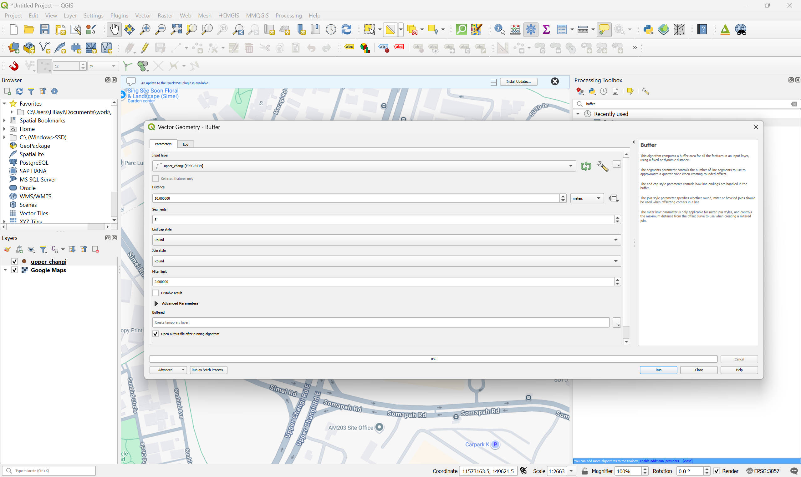
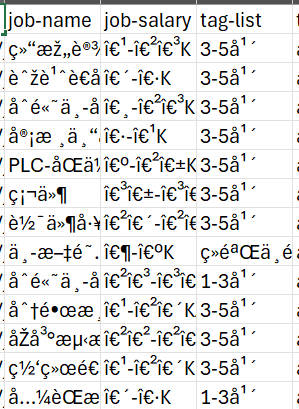
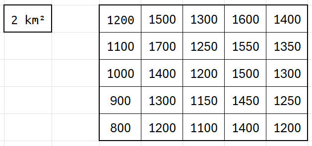
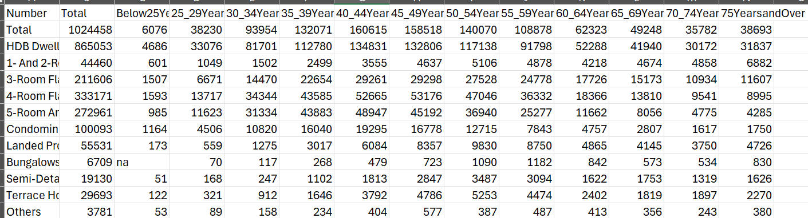

class: center <br> # Geospatial Analysis with Python [Bayi Li](mailto:barryli081@gmail.com) <br> .toc-wrapper[ <div class="toc"> <a href="./py-bootcamp.html#2" class="toc-item">Section I: Introduction to Python</a> <a href="sdp.html" class="toc-item">Section II: Spatial Data Processing</a> <a href="aav.html" class="toc-item">Section III: Advanced Analysis and Visualisation</a> </div> ] ??? The session will cover the fundamental concepts of spatial analysis, types of spatial data, and the formulation of related research questions in urban studies. In the following weeks, vector, raster, and network, three main types of spatial data, will be introduced, along with their respective analysis techniques and applications in urban contexts. --- ## Why Python It offers general benefits: **Easy to learn and use:** For example, takes a number x and returns its square (that number multiplied by itself): .left_half[ Python: ```python def square(x): return x * x ``` ] .right_half[ R: ```r square <- function(x) { x * x } ``` ] .clear[ ] Python's syntax is relatively simple because it **closely resembles natural language**. --- .right_half[ <figure> <img src="imgs\programminglanguagerank_tiobe.png" width="100%"> </figure> ] ## Why Python 2. **Large community and support:** Python is the most popular programming language (TIOBE Index, 2025 and 2026). This means extensive libraries, frameworks, and tutorials are readily available. 3. **Versatile and powerful:** Python can be used for a wide range of applications: Web development, data analysis, artificial intelligence, scientific computing, and more. --- ## Why Python Regarding geospatial analysis itself, it also have great integrations: 1. **Integration with GIS software:** Python is preinstalled in popular graphical interfaced GIS tools such as [QGIS: PyQGIS](https://qgis.org/pyqgis/master/) and [ArcGIS: ArcPy](https://www.esri.com/en-us/arcgis/products/arcgis-python-libraries/libraries/arcpy). 2. **Extensive libraries for geospatial analysis:** In addition to general data science libraries, Python offers a growing range of geospatial analysis tools. --- # GIS tools vs Python How does **Python-based geospatial analysis** compare with **GUI-based GIS software** such as QGIS and Esri ArcGIS in terms of advantages and disadvantages? ## When to use each? We use QGIS (open sourced free to use software) as an example to compare with Python | Aspect | QGIS | Python | | ------------------------------- | ----------------------------------------------------------------------------- | --------------------------------------------------------------- | | **Ease of learning** | Easy to start. Visual interface lowers the entry barrier. | Steeper learning curve. Requires coding skills and debugging. | | **Transparency of workflow** | Lower. Many steps are hidden behind tools and dialogs. | High. Every step is explicit in code and fully traceable. | | **Reproducibility** | Limited. Workflows rely on manual clicks unless models are saved. | Strong. Scripts can be rerun exactly and shared easily. | | **Automation** | Weak by default. Repetitive tasks require manual repetition or Model Builder. | Strong. Loops and functions make large-scale automation simple. | | **Scalability** | Best for small to medium datasets and one-off analyses. | Better for large datasets and repeated processing. | --- # GIS tools vs Python .left_half[ Python turns geospatial analysis from a manual, click-based process into **a reproducible, automated, and scalable workflow**. ] .right_half[ Python gives you **finer, programmatic control** over geospatial logic, data structures, and algorithms than a GUI GIS. ] .clear[ ] For example, creating a 500 metre buffer from the Upper Changi MRT: .left_half[ <figure> <p></p> </figure> ] .right_half[ ```python buffer_500m = upper_changi_pt.buffer(500) ``` ] --- ## Organising Scripts, Data and Files It is crucial to establish a systematic file structure for a coding project. A recommended project file structure could be: ```bash project/ ├── README.md ├── data/ │ ├── raw_data/ │ │ ├── [raw_dataset1].csv │ │ └── [raw_dataset2].csv │ ├── intermedia_data/ │ │ ├── [intermedia_dataset1].csv │ │ └── [intermedia_dataset2].csv │ ├── processed_data/ │ │ ├── [processed_dataset1].csv │ │ └── [processed_dataset2].csv │ └── README.md ├── scripts/ │ ├── data_processing.py │ └── analysis.ipynb └── results/ ├── figures/ └── summary_report.pdf ``` --- .right_half[ <figure> <p></p> <figcaption>Gibberish Chinese characters appearing in a computer system.</figcaption> </figure> ] ### Naming and File Path Guidelines - Ensure that file paths do **not contain spaces or non-ASCII characters** (e.g., Chinese characters). - **Use underscores _ in naming:** This is recommended in the [PEP 8 style guide](https://peps.python.org/pep-0008/#function-and-variable-names). **Why follow these guidelines?** 1. **Spaces in names:** Variable names cannot contain spaces, and spaces in file names can cause issues, particularly in command-line environments. 2. **Non-ASCII characters:** Different operating systems and file systems handle non-ASCII characters inconsistently, which can lead to problems when sharing files across platforms. --- .right_half[ <figure> <img src="imgs\jupyter\google_colab_interface.jpg" class="zoomable" width="100%"> </figure> ] ## Jupyter Notebook [Google Colab](https://colab.research.google.com/), a cloud service built on Jupyter Notebook, provides free access in a web broswer without local setup. You only need a few basics: 1. A Google account 2. A web browser 3. Internet access Limitations: 1. Sessions disconnect after inactivity. 2. Files stored on the runtime reset when the session ends. 3. Computing resource is shared and time-limited. We will continue with [environment.ipynb]() on [Google Colab](https://colab.research.google.com/) for further illustration. --- ## File path When Python reads files from another directory, it uses paths. There are two main types: absolute paths and relative paths. Understanding the parent directory helps avoid file not found errors. ### Absolute directory/path An absolute path gives the full location of a file, starting from the root of the system. ```bash # Windows "C:/Users/<UserName>/project/data/input.csv" # Linux / macOS "/home/<UserName>/project/data/input.csv" ``` --- ### Relative directory/path ```bash "data/input.csv" ``` This means: Look for data/ inside the current working directory. Example folder structure: ```css project/ ├─ data/ │ └─ input.csv └─ scripts/ └─ analysis.ipynb ``` If `analysis.ipynb` is inside `scripts/` and needs `input.csv`: ```python "../data/input.csv" ``` --- ## Data Types and Structures We will begin by introducing some of the most commonly used data types in Python, 1. **number** (integers, floats); 2. ** text** (strings). Understanding these data types is essential for performing calculations, managing text, and working with various types of data. In addition to these fundamental data types, we will explore two versatile and widely used data structures: 1. **lists** ```python ['ASD', 'EPD', 'LKYCIC'] ``` 2. **dictionaries** ```python {'LKYCIC': 'SUTD', 'HASS': 'SUTD', 'ISEAS': 'NUS'} ``` Open [1-01_data.ipynb]() with Google Colab. --- ## Functions A named block of **reusable code** that performs a specific task and only runs when it is called. ### Define a simple function [A simple mathematical function: multiply 5 and minus 10 for every input] ```python def myfunction(input): output = input * 5 - 10 return output ``` ```python myfuction(input = 10) ``` <xL>What if you choose a **wrong** input?</xL> ```python myfuction(input = "Hello SUTD!") ``` Open [1-02_function.ipynb]() with Google Colab. --- ## Libraries A library is a group of modules that contain functions, classes and methods to perform common tasks. .left_half[ ### Import library ```python import time ``` ```python # Get the current time in hours:minutes:seconds current_time = time.strftime("%H:%M:%S") print("Current Time:", current_time) ``` ### Import library and give it alias ```python import pandas as pd ``` ] .right_half[ ### Import a module from a library ```python from matplotlib import pyplot ``` ### Import a function from a library ```python from matplotlib.pyplot import plot, show ``` ### Import a function from a library and give it alias ```python from matplotlib import pyplot as plt ``` ] .clear[ ] ### Importing class from a module of a package importing the Point class from the geometry module of the shapely package ```python from shapely.geometry import Point ``` --- ### Libraries: Numpy **[Numpy](https://numpy.org/)**: core library for **numerical computing** in Python. It provides fast, efficient array operations, mathematical functions, and tools for linear algebra and random number generation. Imagine a city divided into a 5x5 grid of zones. And each value represents the population in that zone .right_half[ <figure> <p></p> </figure> ] ```python import numpy as np population_grid = np.array([ [1200, 1500, 1300, 1600, 1400], [1100, 1700, 1250, 1550, 1350], [1000, 1400, 1200, 1500, 1300], [900, 1300, 1150, 1450, 1250], [800, 1200, 1100, 1400, 1200] ]) zone_area_km2 = 2 # Calculate population density per zone density_grid = population_grid / zone_area_km2 print("Population density per zone (people/km²):\n", density_grid) ``` --- ### Libraries: Pandas **[Pandas](https://pandas.pydata.org/)**: **data manipulation and analysis**. It offers powerful data structures like Series and DataFrames, making it easy to clean, transform, and analyze structured data. ```python import pandas as pd # Create a DataFrame data = {'Pillar': ['ASD', 'HASS', 'LKYCIC'], 'Staff Pop': [100, 80, 50], 'Student Pop': ['200', '50', '70']} df = pd.DataFrame(data) # Display first few rows print(df.head()) ``` --- ### Python libraries in Urban Data Science Representative libraries include: - **[GeoPandas](https://geopandas.org/en/stable/getting_started.html):** Extends pandas to support spatial operations on geometric types. - **[NetworkX](https://networkx.org/):** Models and analyses the structure of networks. - **[PySAL](https://pysal.org/explore/):** A library for spatial data analysis. - **[Geopy](https://geopy.readthedocs.io/en/stable/):** Enables geocoding and geospatial calculations. - **[Folium](https://python-visualization.github.io/folium/latest/):** Creates interactive maps using Leaflet. - **[Cartopy](https://scitools.org.uk/cartopy/docs/latest/):** Focuses on cartographic projections and geospatial data visualisation. - **[Shapely](https://shapely.readthedocs.io/en/stable/):** Enables manipulation and analysis of planar geometric objects. - **[PyProj](https://pyproj4.github.io/pyproj/stable/):** Provides cartographic projections and coordinate transformations. - **[Fiona](https://fiona.readthedocs.io/en/stable/):** Facilitates reading and writing vector data. - **[Rasterio](https://rasterio.readthedocs.io/en/stable/):** Supports reading and writing geospatial raster data. - **[GDAL](https://gdal.org/en/stable/):** Handles raster and vector geospatial data formats. We will cover use cases of some of these libraries. More importantly, we will explore how to utilise them to address research questions encountered in urban research. --- ## DataFrame A Pandas DataFrame is a two-dimensional, tabular data structure in Python that stores data in rows and columns, similar to a spreadsheet or SQL table. Download **Resident Households by Type of Dwelling and Age Group of Head of Household (General Household Survey 2005)** from https://data.gov.sg/datasets/d_7ca9e115fafaee611e99f6fea947c1a1/view. <figure> <p></p> </figure> <xL>How to import a CSV file as a Pandas DataFrame into Python using pandas？</xL> Open [1-03_dataframe.ipynb]() with Google Colab. --- ## GeoDataFrame: DataFrame with a geometry column